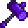

Gewicht
Zur Navigation springen
Zur Suche springen
Gewicht ist ein Wert, der beeinflusst, wie weit ein Gegner von der Waffe des Spielers zurückgestoßen wird.
Waffen
Die folgenden Waffen werden vom Gewicht beeinflusst. Der Effekt ist permanent, während die Waffe verwendet wird.
| Bild | Name | Effekt |
|---|---|---|
| Kristalldolch | ||
| Windspitze | ||
| Flamberge | ||
| Knochenschwert | ||
| Lava-Katana | ||
| Holzhammer | ||
| Eiserne Klinge | ||
| Neptuns Gleve | ||
| Galaxie-Dolch | ||
|  | Galaxie-Hammer |
Ringe
Die folgenden Ringe erhöhen das Gewicht(Rückstoß). Der Effekt ist permanent, während der Ring ausgerüstet ist.
| Bild | Name | Effekt |
|---|---|---|
| Amethyst-Ring | Erhöht |
| Fähigkeiten & Werte | |
|---|---|
| Fähigkeiten | Hofarbeit • Minenarbeit • Sammeln • Fischen • Kampf |
| Werte | Angriff • Geschwindigkeit • Gewicht • Glück • Immunität • Kritische Chance • Kritische Kraft • Magnetismus • Verteidigung |